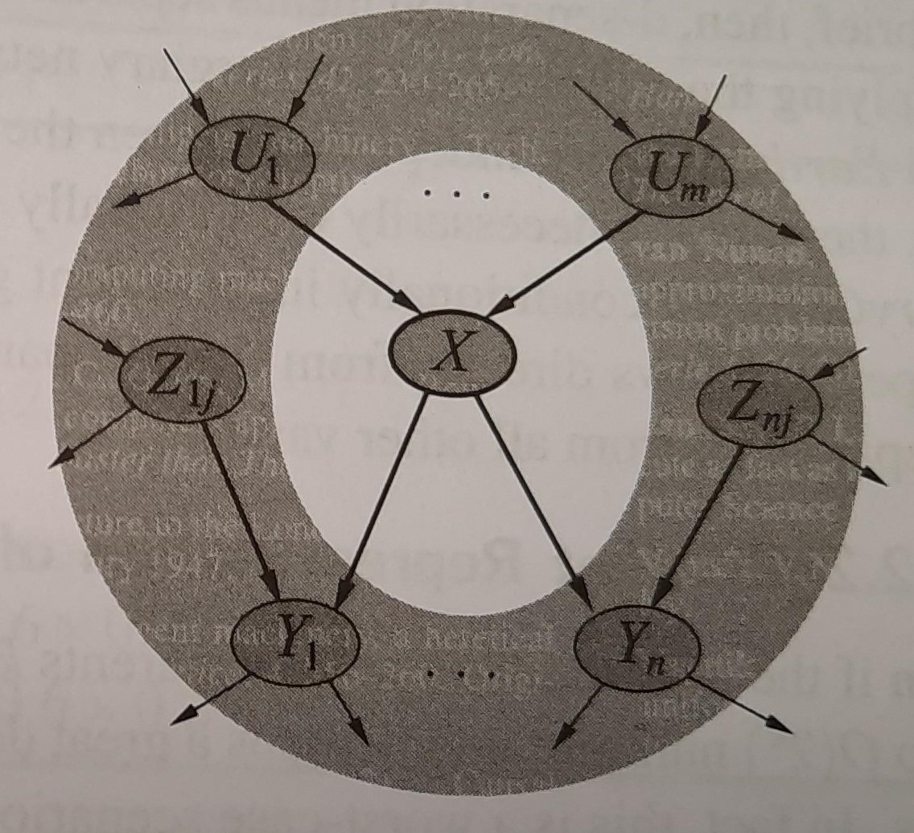
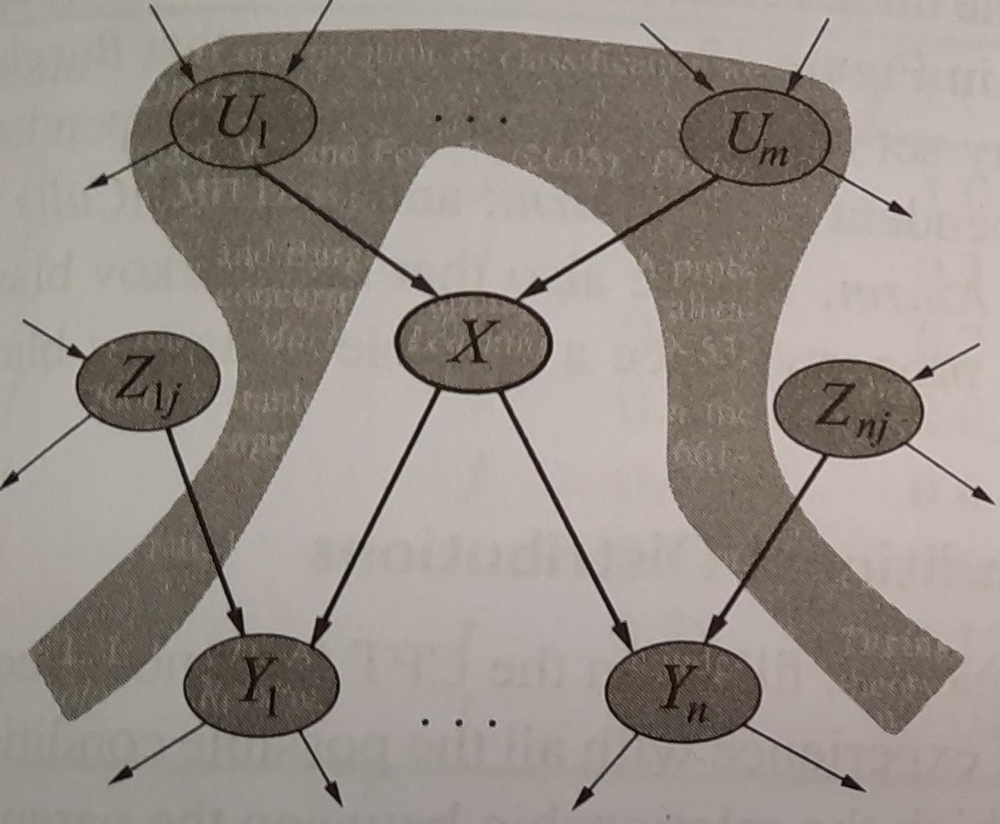

Venkatesh Subramanian, TA
March 28, 2024
For PPPE 6342: Research Design II
For now…
Train: $ Tr = { x_i, y_i } _1^N $
Now, training error: $MSE_{Tr} = Ave_{i \in Tr}[y_i - \hat{f}(x)]^2$
Test: $ Te = {x_i, y_i}_1^M $.
Then, test error: $MSE_{Te} = Ave_{i \in Te}[y_i - \hat{f}(x)]^2$
If $\hat{f}(x)$ can minimize both $MSE_{Tr}$ and $MSE_{Te}$, then it is said to be a predictive model. Then ${x_i}_1^N$ are said to predict ${y_i}_1^N$
Now, what would $\hat{f}(x)$ look like?``Everything Should Be Made as Simple as Possible, But Not Simpler"
So, pick the right number of RVs
Which of these RVs adds meaningful information to predict height of a person?
In short, we need to understand how RVs are related to each other to do prediction well.
DAGs summarize information about which RV has information on which RV and how they are related!
Lets go to dagitty.net.
Can you guess which nodes in this graph provide the most information about the outcome here?
Parents, Children and Parents of Children
No other node adds any additional information about the node other than the ones in the Markov Blanket.
Piccininni, M., Konigorski, S., Rohmann, J.L. et al. Directed acyclic graphs and causal thinking in clinical risk prediction modeling. BMC Med Res Methodol 20, 179 (2020). https://doi.org/10.1186/s12874-020-01058-z
We said in class that DAGs were all about identifying the causal structure. But now we used it to do prediction?
So is causation and prediction the same? NO
We have to isolate a single variable.
We have to isolate the treatment-outcome chain (cause-effect).
So we can only condition on the parents!
Backdoor paths between D and Y are those that “point into D”. So conditioning on parents can mean just meeting the Backdoor criterion!